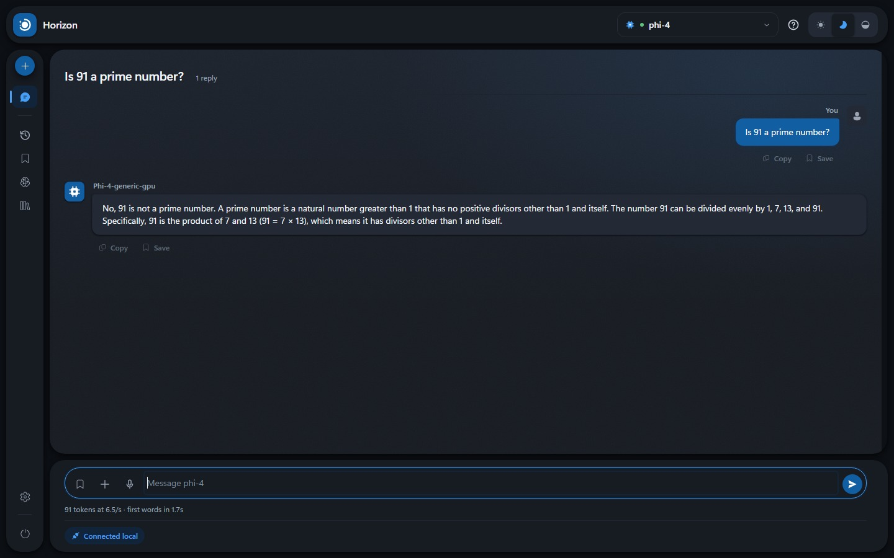
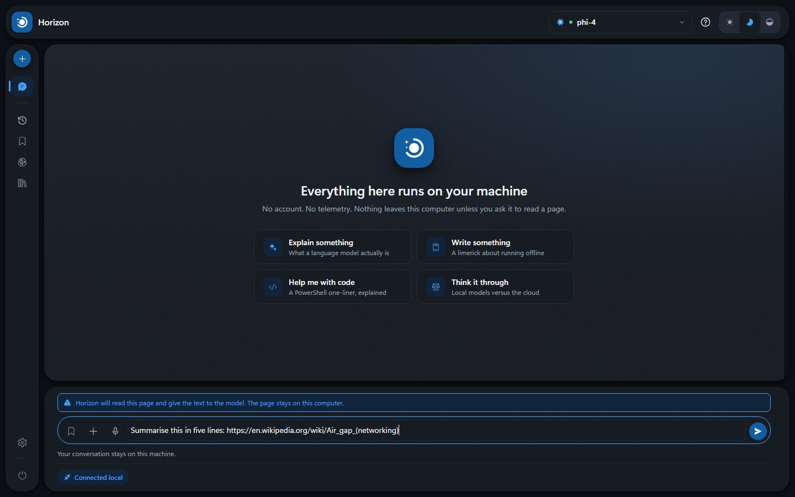

User guide
Everything Horizon does, in the order you are likely to meet it. Not installed it yet? Start here.
Your first question

Type into the box at the bottom and press Enter. The first answer of a session is slow — twenty or thirty seconds on a large model — because it has to be read into memory first. After that it stays loaded and replies come quickly.
Underneath each reply Horizon shows what it cost: how many tokens, how fast, and how long you waited. Measured, not estimated.
- Enter
- Send.
- Shift + Enter
- New line without sending.
- The send button, mid-reply
- Stops it. What has arrived is kept.
Choosing a model
The picker at the top lists every model on this computer, with the hardware it runs on and its size. Switching is live: no restart, and your conversation is kept.
Bigger is generally better at reasoning and worse at waiting. A 529 MB model answers almost immediately and gets arithmetic wrong; an 8 GB one takes its time and is far steadier.
New models come from Settings → Models, downloaded once and then run without a network. Nothing is fetched unless you ask for it.
When a model shows its working

Some models publish their reasoning separately. When one does, Horizon puts it in its own panel with the time it took. The panel closes itself once the answer begins — but if you opened it to read, it stays open.
Most models have no such panel, and that is normal. A model without one is not hiding anything: it works through the problem inside its answer, the way you can see it doing when it writes "first, let us check…". This is a property of the model, not a setting you have missed.
Talking instead of typing

Off until you turn it on, in Settings → Behaviour. Switching it on downloads a speech model once; after that it works with no internet at all.
Press the microphone and speak; the words appear as you go. Press Stop, or the microphone again, to finish.
Worth knowing: the recording is opened by Foundry, not by your browser, so your browser shows no recording dot and never asks your permission. That is why Horizon shows a red banner and a running clock of its own. No banner, no recording.
Which microphone is used is decided by Windows, not by Horizon.
Reading a page

Models cannot open links. Paste one and, left alone, the model guesses from the address and invents the rest.
So Horizon can fetch the page and hand the text to the model. This is off by default, being the only feature that reaches outside your machine. Turn it on in Settings → Behaviour. Once on, pasting a link shows a notice, and the badge turns amber while it happens.
Keeping things
Four panels down the left:
- History — every conversation, searchable. A chat is only written down once it has something in it.
- Prompts — questions you want to ask again, saved with a name.
- Memory — facts every model should know about you. Added to the start of every conversation, so keep them short.
- Library — replies you have saved.
All four live in your browser's storage on this computer. Settings → Storage shows where, exports the lot, and can erase everything.
Knowing where you stand
The badge in the bottom-left says one of three things:
- Connected local — talking to the model on this machine, nothing else.
- Connecting to internet — a page is being fetched. It stays amber a while afterwards, and keeps a mark, so a quick fetch is not something you can miss.
- Fully offline — no model running.
It is a claim, so you can check it: press the badge and Horizon shows every request it has made and where each one went.
Closing properly

Closing the tab orphans the model in memory. Use the power button at the foot of the left rail instead; it offers to stop the Foundry service too, which is what actually returns the memory.
When something looks wrong
- The first answer is very slow. Expected. The model is being read into memory. Later answers are much faster.
- The model says something confidently wrong. Also expected, especially on small models. Nothing here checks facts. The smaller the model, the more this matters.
- A pasted link was answered without being read. Link reading is off. Turn it on in Settings → Behaviour.
- No thinking panel. The model does not publish its reasoning. See above.
- Dictation types nothing. Check the red banner is showing, and that Windows is listening to the microphone you are speaking into.
- Nothing works and the badge says fully offline. Foundry has stopped. Settings → Foundry restarts it.
Anything else is worth reporting.